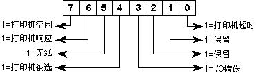

打印输出是一种硬拷贝输出，也是一种常用的输出形式。随着计算机应用领域的不断扩大，外围设备的重视程度也越来越高。目前，打印机的种类已日益丰富，有针式打印机、喷墨打印机和激光打印机等。从打印色彩来看，既有普通的黑色打印，也有彩色打印。总之，计算机打印输出的品质是越来越高。
打印机状态字记录着打印机的当前工作情况(或状态)，它相当于CPU中的程序状态字和键盘状态字。打印机状态字的各位定义如图8.11所示。
若在某个程序中要包含打印功能，那么，程序员可通过打印状态字来了控制打印过程，并向使用者提供各种有用信息。比如：提示使用者“打印机无纸了”或打印机处于脱机状态(Off Line)等。

在打印时，程序员往往要控制文本的输出格式，比如：换页、换行、字体或字号等。若要实现对打印格式的控制，就必须要知道控制打印机的控制字符和控制命令。一些常用的打印控制字符如表8.3所示。
表8.3 常用的打印控制字符| 字符值 | 功能描述 |
| 09H | 水平制表符，跳到下一个制表位置 |
| 0AH | 换行 |
| 0CH | 换页 |
| 0DH | 回车 |
打印机还有其它的控制命令，如：ESC命令序列，该序列由字符ESC(其ASCII为1BH)和一些数值组成。表8.4列举了LQ-1600K打印机的几个控制命令。对于其它各类打印机的控制命令，要参阅其使用手册。
| 控制命令 | 命令的数值 | 功能描述 |
| ESC @ | 1BH 40H | 初始化打印机 |
| ESC 4/ESC 5 | 1BH 34H／1BH 35H | 设定／取消斜体打印 |
| ESC S 0/ESC S 1 | 1BH 53 0／1BH 53 1 | 设定上／下角标打印 |
| ESC T | 1BH 54H | 取消上／下角标打印 |
| ESC l n | 1BH 6CH n | 设定左边界，n为当前字符的宽度 |